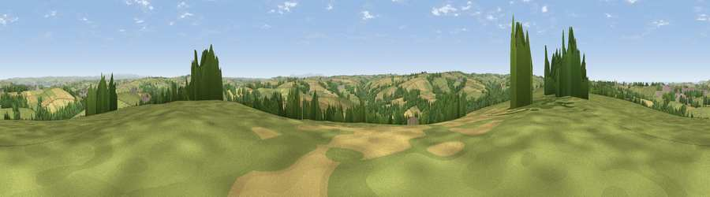

Viewpoint near Littleham
#6692 in England · top 16% of its area beats it · near LittlehamThe view, rendered

A 360° render of this exact spot computed from the terrain model, tree cover and land cover — summer colours, afternoon light, calibrated against photographs of famous viewpoints. Real trees, hedges and buildings will differ in detail.
The panorama
Grey silhouette: terrain skyline in each direction (720 bearings, Earth curvature and refraction included). Dashed green: skyline with trees (+15 m) and buildings (+8 m) as obstacles. Blue strip: how far the ground is visible on each bearing.
Where the view opens
Wedge length = distance to the farthest visible ground on that bearing (vegetation-aware). Rings at 10, 25 and 50 km.
What fills the view
53% grassland · 27% cropland · 17% woodland · 2% built-up ·
Angular shares of the visible panorama (visual magnitude), not map area. Landscape diversity 0.48 (0–1 Shannon).
Key numbers
More beautiful places nearby
The staircase of upgrades: each row has a higher view potential than everything closer. Driving times are estimates from straight-line distance, calibrated against real road routing — check an actual route before setting out.
| Place | Direction | Drive | Score |
|---|---|---|---|
| Viewpoint near Parkham | W · 4 km | ~8 min | 69.2 |
| Viewpoint near Bideford | ENE · 4 km | ~9 min | 73.5 |
| Babbacombe Hill | WNW · 4 km | ~9 min | 78.7 |
| Viewpoint near Abbotsham | WNW · 4 km | ~10 min | 79.9 |
| Viewpoint near Parkham | W · 5 km | ~11 min | 81.7 |
| Viewpoint near Bucks Mills | W · 6 km | ~13 min | 84.0 |
| Viewpoint near Woolacombe | N · 18 km | ~32 min | 84.7 |
| Viewpoint near Combe Martin | NNE · 28 km | ~45 min | 86.9 |
50.99165, -4.22795 · source: screening · position refined by local search. Computed location — check access rights before visiting.